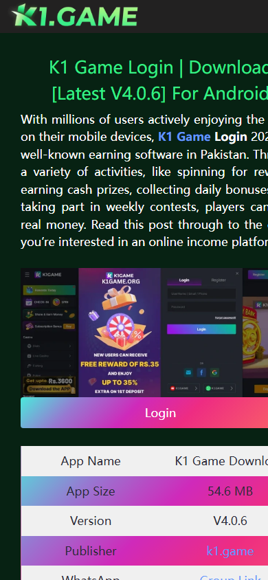

Home / Guides / K1 Game Payment Support Comparison Checklist
Support comparisonK1 Game Payment Support Comparison Checklist
Help comparison searchers judge payment support quality instead of comparing only bonus claims.
Support quality beats slogans
Payment pages should explain proof, timing, method, and support path. A large bonus claim is weaker than clear support handling.
Pakistan wallet relevance
JazzCash and Easypaisa context matters for local users, so comparison pages should check whether wallet guidance is practical.
Evidence-based comparison
Use support visibility, terms clarity, screenshot guidance, and transaction proof requirements as comparison factors.
K1 public evidence note
This page uses K1-only public evidence collected on 2026-06-13. B9 is not used as K1 evidence.


Action checklist
- Check support and contact visibility.
- Compare wallet proof instructions.
- Review terms before bonus claims.
- Prefer pages that explain pending transactions clearly.
FAQ
What is payment support quality?
Clear transaction proof instructions, visible support path, and realistic timing guidance.
Should bonus size decide the comparison?
No. Payment clarity and support evidence are more important for long-term trust.
Why compare wallet guidance?
Pakistan users need practical JazzCash/Easypaisa context, not generic payment text.